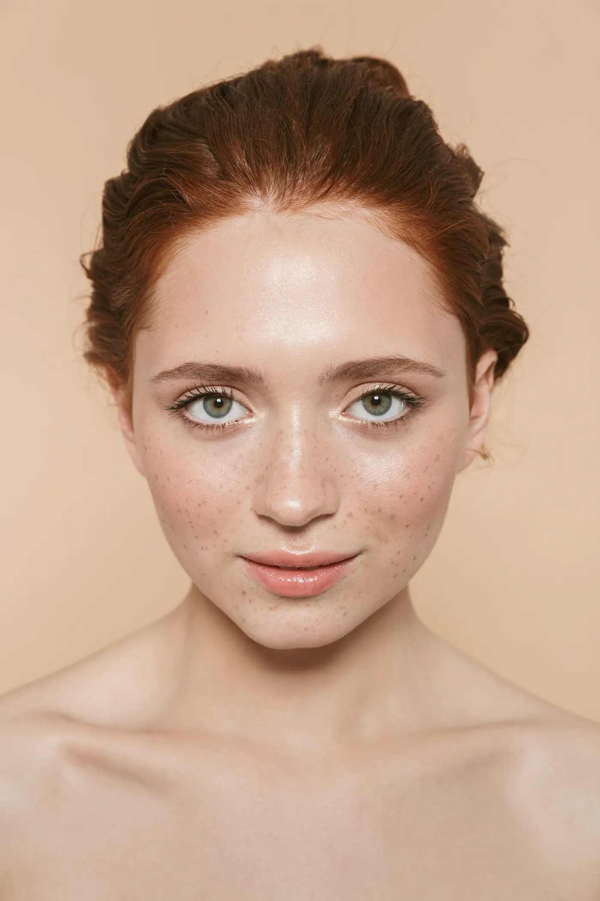
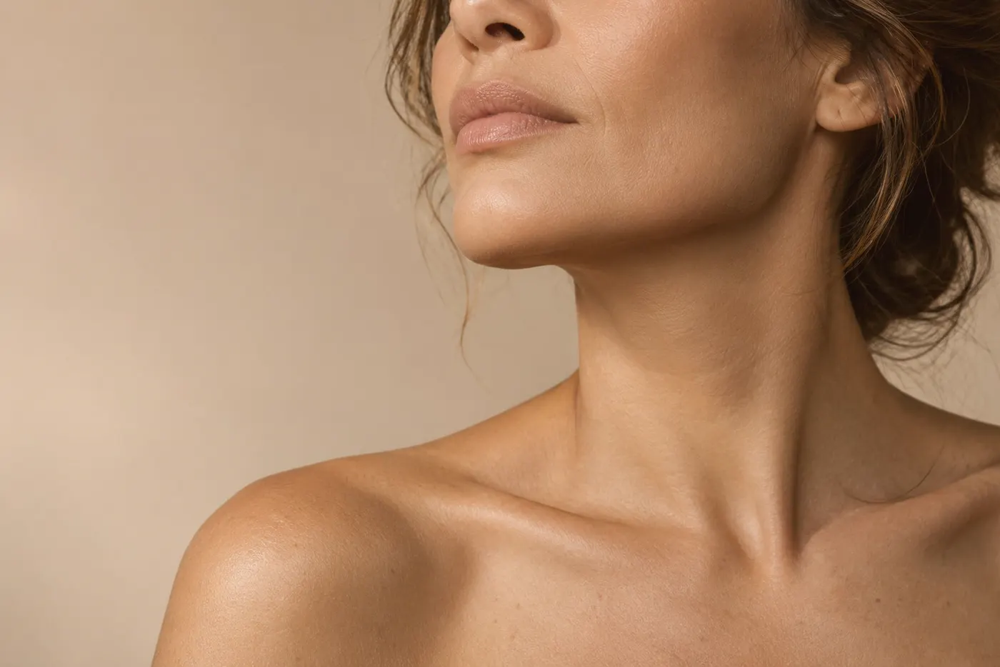
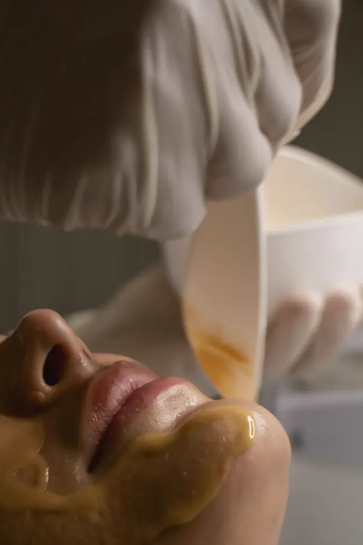
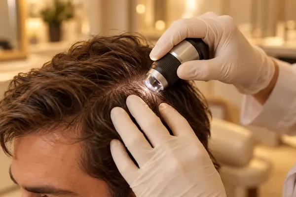
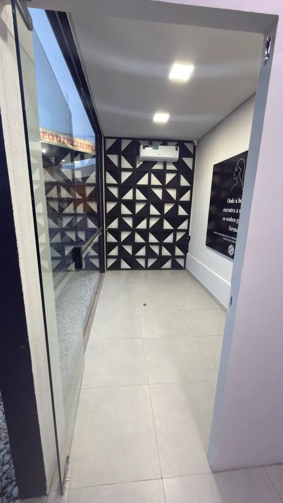
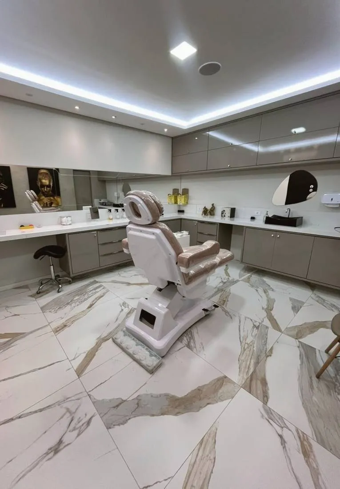
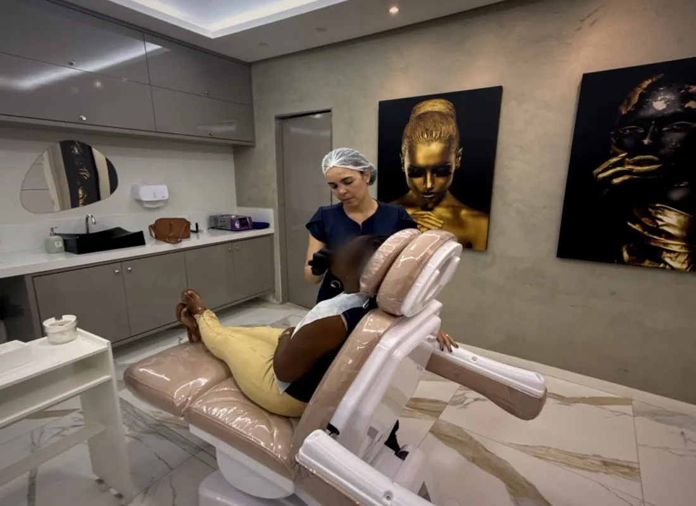
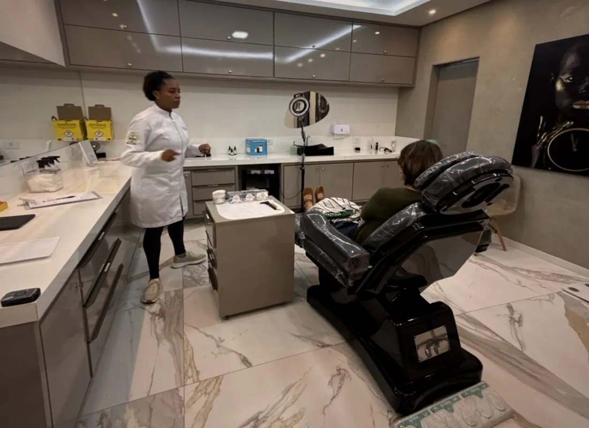
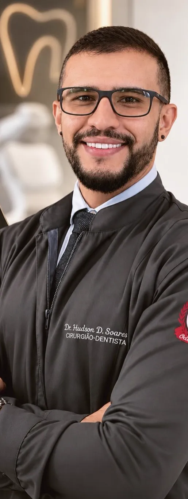

Dr. Glautium GabrielHarmonização Orofacial e Cirurgia BucomaxilofacialCRO-BA 16384
Cuidado completo, do rosto ao corpo
Médicos, dentistas e especialistas em um só lugar.
Policlínica · Jequié/BA
R. Dr. João Braga, 640 · Jequiezinho
Como agendar
Três passos,
sem complicação.
Do primeiro contato à avaliação presencial, com a recepção cuidando do horário para você.
Passo 1WhatsApp
Conte o que te incomoda
Chame a equipe no WhatsApp com sua dúvida ou queixa.
Passo 2Recepção
Escolha o melhor horário
A recepção encontra o dia e o profissional certos para você.
Passo 3Jequiezinho
Venha para a avaliação
Você é recebida(o) em Jequiezinho, na R. Dr. João Braga, 640, e conhece o plano pessoalmente.
Áreas
Por onde
começar?
Do rosto ao corpo, cada queixa tem o seu caminho. A escolha do tratamento vem da avaliação.

Face
Toxina botulínica, ácido hialurônico, bioestimuladores, fios, lábios e Endolaser.

Cirurgia
Lipo de papada, bichectomia, lip lift, queiloplastia e DTM.

Pele
Manchas, melasma, acne, peelings, microagulhamento e Revitalli.
Corpo
Gordura localizada, flacidez, celulite, estrias e diástase.
Sorriso
Implantes, lentes de contato dental, clareamento e alinhadores.

Cabelo
Avaliação tricológica, tratamento da queda e implante capilar.
Nutrição
Bioimpedância, plano alimentar e acompanhamento contínuo.
Bem-estar
Massoterapia, fisioterapia, podologia e cuidado com feridas.
A clínica
Um só lugar,
em Jequiezinho.
R. Dr. João Braga, 640 · Jequiezinho · Jequié/BA.




Equipe
Quem cuida
de você.
Médicos, dentistas e especialistas olhando para o mesmo plano.
Dra. Ionara CarosoMédica · estética, corpo e dermatologiaCRM-BA 16679

Dr. Hudson D. SoaresImplantes, estética e reabilitação oralCRO-BA 23283
Dra. Juliana Coelho MorenoImplantes, estética dental e atendimento infantilCRO-BA 27601
Dr. Mateus Silva BritoTricologia e implante capilarCRM-BA 49804
Dra. Jéssica LopesBiomédica estetaCRBM-2 15493
Maria Eduarda BrisolaEsteticista · limpeza de pele, peeling e microagulhamento
Sabrina AmparoNutricionistaCRN-5 20406
Gisele GomesFisioterapeutaCREFITO-7 441870-F
Maria NeuzaPodóloga
Natieli BatistaEnfermeira e massoterapeutaCOREN-BA 000.983.427-ENF
Tátila ArgoloMassoterapeuta
Jaiane Santos · gestãoLuísa · recepçãoSara · financeiroSabrina · equipe IHFCSualice · equipe IHFC
Fundador, diretor e responsável técnico
Dr. Glautium
Gabriel.
Cirurgião de formação, ele avalia o rosto pela estrutura: osso, músculo, gordura e pele, e planeja cada caso a partir dela.
- Cirurgião e Traumatologista Bucomaxilofacial
- Especialista em Harmonização Orofacial · CRO-BA 16384
- “Segurança vem antes da estética.”
Dúvidas frequentes
O que mais
perguntam.
Respostas curtas. A resposta para o seu caso vem da avaliação presencial.
5,0 ★
ver no Google Maps →O plano parte da anatomia do seu rosto e das suas expectativas. Na avaliação, o profissional explica o que pode mudar, os limites e os riscos de cada opção, antes de qualquer procedimento.
O efeito da toxina botulínica é temporário: o músculo volta a se mover aos poucos. Repetir a aplicação é uma decisão sua, tomada com avaliação profissional; não existe obrigação de continuar.
Nem sempre. A papada pode vir de gordura, de flacidez da pele ou do formato do queixo, e cada causa tem um caminho diferente. A avaliação mostra qual é o seu caso e quais opções fazem sentido.
O melasma costuma ser persistente e pode voltar. O tratamento ajuda a reduzir as manchas, e a proteção solar diária com acompanhamento ajuda a manter o resultado.
A duração varia conforme o produto e a região tratada. O ácido hialurônico é absorvido pelo corpo aos poucos, e a necessidade de reaplicar é avaliada caso a caso.
O bioestimulador estimula o próprio corpo a produzir colágeno, um processo gradual. A evolução varia conforme o produto e a resposta de cada pessoa, e é acompanhada nos retornos.
Agende sua avaliação
O primeiro passo é
uma conversa.
Mande uma mensagem contando o que te incomoda. Nossa equipe responde e encontra o melhor horário para você.
Seg. a sex.: 8h às 12h e 14h às 18h · Sábado: 8h às 12hDúvidas, sugestões, críticas ou renegociação: Jaiane · (73) 98807-7281